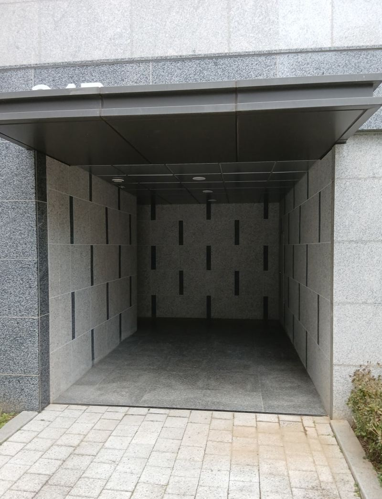
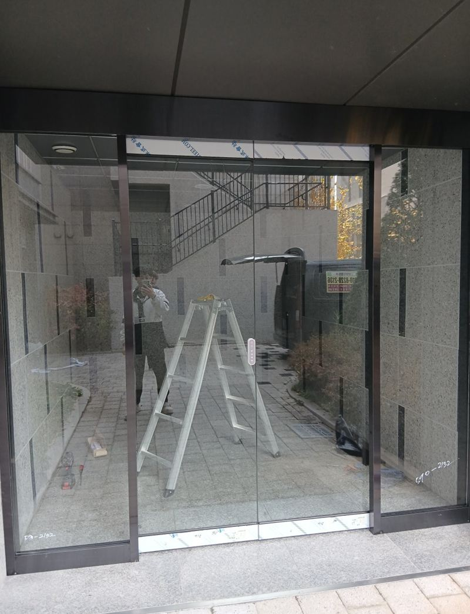
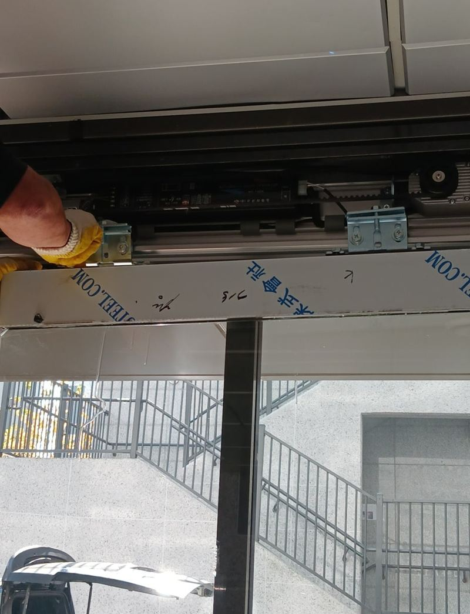
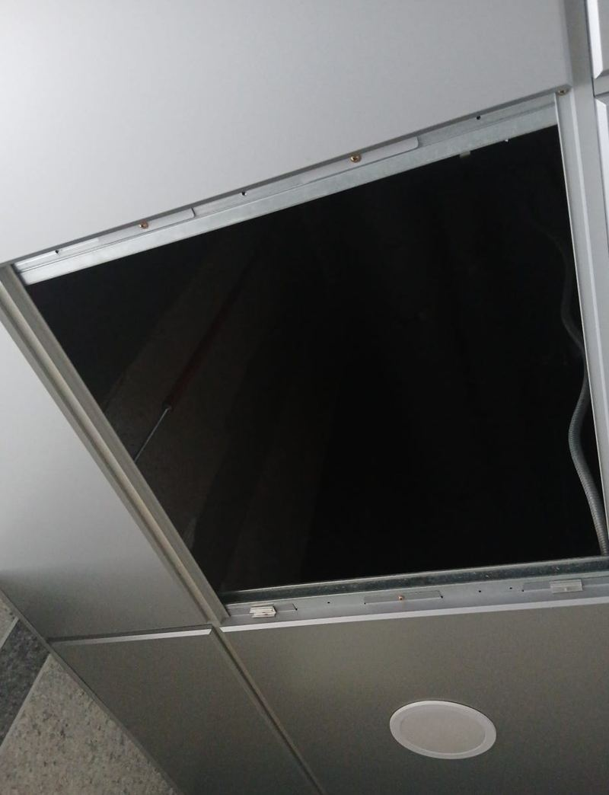
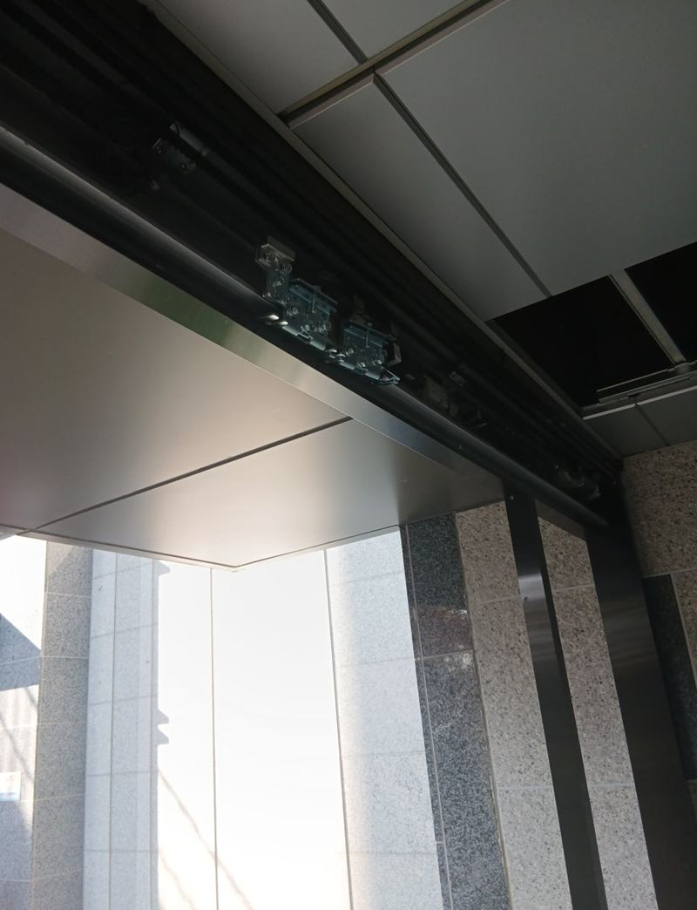
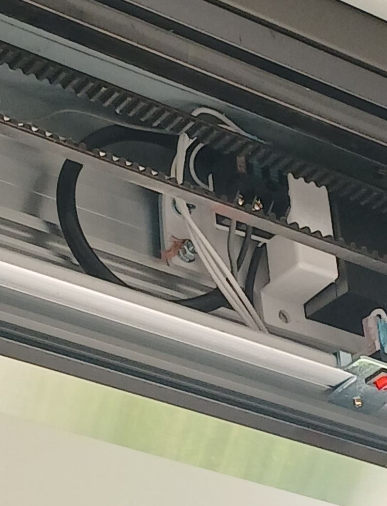
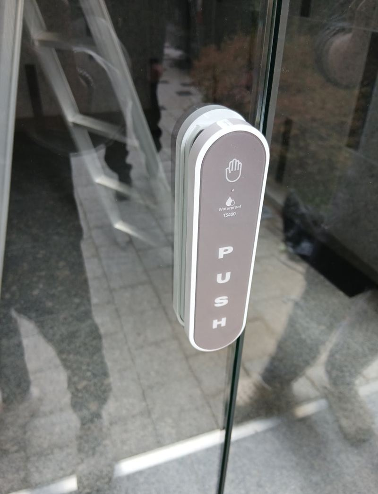

평택 건물 출입문 센서 자동문 시공 방법

 시공 전시공 후
시공 전시공 후← 밀어서 전후 비교 →
지상 출입구와 지하주차장 출입구가 바로 이어진 아파트 동이었어요. 겨울이면 바깥바람이 엘리베이터 앞까지 그대로 들어오고, 사람이 몰리면 동선이 뒤엉켰어요. 출입구에 센서 자동 강화유리문과 옆 고정 유리를 달아 바람과 동선을 한 번에 나눴어요.
| 현장 | 평택 고덕동 아파트 동 출입구 |
|---|---|
| 문제 | 외풍 유입, 지상·주차장 동선 혼재, 보안 |
| 설치 | 센서 자동 강화유리문 + 픽스(고정) 유리 |
| 한 일 | 실측(유리 규격·프레임 깊이·센서 위치·바닥 수평) → 상부 레일·프레임 → 유리 → 센서 조정 |
출입구 하나로 바뀌는 것들
- 외풍 차단바깥바람이 로비와 엘리베이터 앞까지 들어오지 않아요.
- 동선 구분지상과 주차장 출입이 섞이지 않게 구역이 나뉘어요.
- 보안택배·배달로 문이 열려 있는 시간이 줄어요.

센서 자동문 설치 순서
실측
유리 크기, 프레임이 들어갈 깊이, 센서 달 위치, 바닥 수평을 쟀어요. 이게 맞아야 맞춤 제작한 강화유리가 딱 들어가요.
상부 레일과 프레임
자동문이 매달려 움직일 레일과 위쪽 프레임을 먼저 고정했어요. 유리 하중을 받는 부분이라 수평이 중요해요.


유리문·고정 유리 안착
움직이는 문짝과 옆 고정 유리를 차례로 앉히고 간격을 맞췄어요.


센서 조정과 개폐 확인
센서 감지 범위와 열리는 속도, 닫히는 시간을 맞추고 여러 번 드나들며 확인했어요.

자동문 센서가 말썽일 때 흔한 원인
| 증상 | 흔한 원인 |
|---|---|
| 사람이 없는데 열려요 | 감지 범위가 너무 넓거나 바람에 흔들리는 물체 |
| 다가가도 안 열려요 | 센서 오염, 각도 틀어짐 |
| 닫히다 다시 열려요 | 문짝 비틀림, 레일 걸림 |
자동문을 고민하는 출입구
- 겨울마다 로비가 추워요출입구가 그냥 뚫려 있으면 난방이 그대로 빠져나가요. 문 하나로 체감 온도가 달라져요.
- 택배·배달로 문이 늘 열려 있어요자동으로 닫히는 문이면 열려 있는 시간이 확 줄어요.
- 손이 무거운 분들이 많이 다녀요어르신, 유모차, 짐 든 입주민이 문을 밀지 않아도 돼요.
- 기존 자동문이 자꾸 멈춰요센서·레일 점검으로 해결되는지 먼저 봐요.
센서 자동문 질문
아파트 출입구에 다는 건 관리사무소 결정인가요?
공용부라 입주자대표회의나 관리 주체의 결정이 필요해요. 의뢰하시는 분이 미리 확인해 주세요.
정전되면 문이 열려 있나요?
제품에 따라 수동으로 밀어서 열 수 있게 되어 있어요. 설치할 때 사용법을 안내해요.
기존 수동 유리문을 자동문으로 바꿀 수 있나요?
문틀과 위쪽 공간이 구동부를 달 수 있는지 봐야 해요. 출입구 사진을 보내 주세요.
강화유리 두께는 어떻게 정하나요?
문 크기와 출입량을 보고 정해요. 공동주택 출입구는 튼튼한 쪽으로 권해요.
카드·비밀번호 출입과 연결되나요?
출입 통제 장치와의 연결은 장치 업체와 함께 맞춰요.
상가 출입구도 같은 방식인가요?
네, 상가·학원 출입구도 같은 순서로 시공해요.
자동문 유지보수는 따로 해야 하나요?
센서 렌즈를 가끔 닦고 레일에 이물질이 끼지 않게 해 주시면 돼요. 이상이 생기면 연락 주세요.
설치 기간 동안 출입은 어떻게 하나요?
구간을 나눠 작업하고 한쪽 통로는 열어 둬요. 관리사무소와 안내문을 맞춰요.
유리문에 단지 이름 시트를 붙일 수 있나요?
설치 후 시트지 업체가 바로 붙일 수 있게 일정을 맞춰 드려요.
다른 유리문·자동문 현장
출입구 정면 사진과 대략적인 폭·높이를 알려주세요.
전화 상담 010-4517-9872